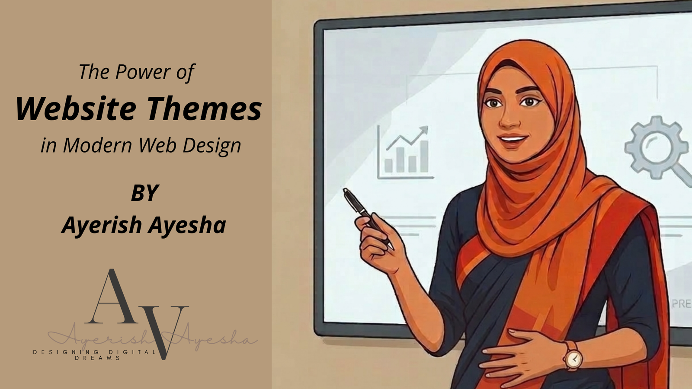

Introduction to Themes in Web Development
Themes are the backbone of every modern WordPress website. Think of them as the visual language of a brand — without them, a website is nothing more than raw text with no form, feel, or identity. A theme determines layout, typography, color, and interactivity, shaping every aspect of how visitors experience a site.
In today's digital landscape, a well-chosen theme does far more than satisfy aesthetic preferences. It directly influences usability, search engine performance, page speed, and conversion rates. Businesses that invest in the right theme gain a measurable edge over competitors who treat design as an afterthought.
For WordPress developers, mastering themes is not optional — it is the very foundation of the craft.
Understanding WordPress Themes
A WordPress theme is a coordinated collection of files — templates, stylesheets, images, and scripts — that collectively define a website's visual structure and behavior. In practical terms, a theme governs overall page layout, color schemes, typography, and navigation design.
Without a theme, a WordPress installation presents as unstyled, plain HTML — functional, but wholly uninviting. Themes bridge the gap between raw content and polished experience.
Why Themes Are Essential for Websites
Design Consistency: A professionally built theme enforces consistent design rules across every page. This consistency communicates reliability and builds brand trust.
User Experience: Intuitive navigation, readable typography, and balanced visual hierarchy are all theme-dependent. It structures the user's journey through content effectively.
Brand Identity: Themes communicate identity through visual choice — color associations and typographic personality. A well-selected theme tells visitors what a business stands for.
Types of WordPress Themes
Free Themes: Available directly from the WordPress.org directory. Excellent for beginners and simple projects, though typically limited in advanced customization.
Premium Themes: Developed by professional design teams. These include advanced customization, dedicated support, and broader feature sets.
Custom Themes: Built from the ground up for a specific brand. Custom themes provide complete design and functional control for a unique digital presence.
Key Features of a High-Quality Theme
Responsive Design: A responsive theme adapts fluidly to any screen dimension. With mobile devices accounting for the majority of traffic, this is a baseline requirement.
SEO Optimization: Well-engineered themes produce clean, semantically structured HTML that search engines can parse efficiently, including schema markup and proper hierarchy.
Speed and Performance: A high-quality theme is architecturally lean — loading only what is necessary and never burdening the browser with redundant code.
How I Use Themes to Build Professional Websites
Every project begins with matching theme architecture to client goals. Once selected, customization transforms a generic theme into a branded experience by refining color palettes and typography.
Themes reach their full potential when paired with the right plugin ecosystem — SEO tools, performance optimizers, and security systems to create a production-ready website.
The Future of WordPress Themes
The landscape is evolving with Block-Based Themes, bringing unprecedented design freedom through Full Site Editing. Developers can now compose entire layouts from flexible, reusable blocks.
AI and Smart Design are also reshaping themes, offering automatic layout optimization, personalized user experiences, and AI-assisted design suggestions during customization.
Why Businesses Need the Right Theme
The right theme delivers measurable outcomes: Credibility, Engagement, and Conversion. It guides visitors toward desired actions like enquiries or purchases while building brand equity.
In today's hyper-competitive digital environment, the technical quality of a theme directly influences rankings and discoverability. The right theme is a strategic business asset.